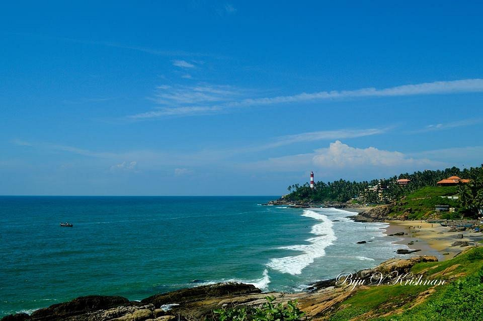

Thiruvananthapuram - Evergreen City of India
1.Sree Padmanabha Swamy Temple

Sree Padmanabhaswamy Temple is a centuries-old temple in Thiruvananthapuram dedicated to Lord Vishnu. It is a must-visit spiritual tourist destination for travelers in Thiruvananthapuram, the capital city of Kerala. The eye-catching architecture is the prime attraction of this temple. The temple architecture has the right blend of both Kerala and Dravidian styles. Being one of the sacred 108 Vishnu temples in the country, many Hindu devotees visit this holy place every day. Lord Vishnu, the presiding deity in this temple is in the form of reclining on Anantha, the large hooded serpent.
Varma, a famous Travancore King dedicated his kingdom to Lord Padmanabha. Even he vowed that the royal family rules their kingdom on behalf of Lord Padmanabha. The descendants served the kingdom as the servants of the Lord. Marthanda Varma Maharaja did great renovation to this temple and made it one of the beautiful present day structure. The king also introduced two major festivals, the Murajapam and Bhadra Deepam to the temple. In the local language, Murajapam means, the continuous chanting of prayers and the temple conducts this festival once in six years. The capital city, Thiruvananthapuram got its name from the main deity, Sree Ananada Padmanabhaswamy.Some of the ancient texts like Skanda Purana and Padma Purana have references about the Sree Padmanabhaswamy temple. The sanctum sanctorum of the temple is placed on a stone slab.

The main idol is nearly 18 feet long and devotees can see it through three different doors. The exquisite work in bronze and stone made the architecture of this temple marvelous. The beautiful murals and paintings adorn the interiors of Sree Padmanabhaswamy temple. Covered with gold-plated copper sheets, the flag post is a great feature of the temple which is nearly 80 feet high. Bali Peeda Mandapam and Mukha Mandapam are two halls in the temple with attractive structural features. Fascinating sculptures of different Hindu deities decorate these halls.Visitors need to follow strict dress code in order to enter the temple. Men need to wear the traditional mundu or dhoti around the waist without any shirt. Women need to wear sari, half-sari and skirt and blouse to enter the temple. Nowadays, temple authorities permit visitors to enter the temple wearing dhotis over their churidar or pants. Sree Padmanabha Swamy Temple is nearly 1 kilometer away from Thiruvananthapuram Central railway station. Trivandrum International Airport is only 6 kilometers from this temple. Check the pilgrimage travel packages of Tour My India to get more information about Sree Padmanabha Swamy Temple in Thiruvananthapuram.
2.Kovalam Beach

Kovalam is an internationally renowned beach with three adjacent crescent beaches. It has been a favourite haunt of tourists since the 1930s. A massive rocky promontory on the beach has created a beautiful bay of calm waters ideal for sea bathing.
The leisure options at this beach are plenty and diverse. Sunbathing, swimming, herbal body toning massages, special cultural programmes and catamaran cruising are some of them. The tropical sun acts so fast that one can see the faint blush of coppery tan on the skin in a matter of minutes.
Life on the beach begins late in the day and carries on well into the night. The beach complex includes a string of budget cottages, Ayurvedic health resorts, convention facilities, shopping zones, swimming pools, Yoga and Ayurvedic massage centres.
Accommodation facilities for tourists at Kovalam range from five star hotels to budget hotels and the choice of food available at restaurants and cafeterias range from Continental varieties to South Indian delicacies.
Thiruvananthapuram, the capital city of Kerala, is just 16 km away from Kovalam and getting there is no hassle. But if you are on holiday it is better to stay in Kovalam and visit the city. The city of Thiruvananthapuram has many interesting places to see like the Napier Museum, the Sri Chitra Art Gallery and the Padmanabhaswamy Temple. The SMSM Institute, a State owned handicrafts emporium, is the ideal place to pick up ethnic curios and other articles.
3.Aazhimala Shiva Temple
Aazhimala Siva Temple in Kazhivoor has been attracting a throng of ardent Shiva devotees as well as fascinated tourists for decades now. 'Aazhi' translates to Sea and 'Mala' means Hill- and the temple has been named so because it rests right on the golden shore of the Arabian sea on a slightly elevated platform. The Aazhimala Siva Temple, as the name suggests, is devoted to the great Lord Shiva. Since Tuesday is considered to be an auspicious day by Shiva's devotees, every Tuesday, hoards of the lord's disciples come to seek his blessings at this temple.
The annual festival of the temple is held between January and February where thousands of devotees come together to offer the 'Naranga Vilakku' which is essentially an oil lamp that is lit on a lemon. Witnessing hundreds of oil lamps on the seashore being lit in harmony will make you think that the sparkling night stars have fallen to the ground! Since the Aazhimala Siva Temple is located on an elevated pitch, the temple provides a panoramic and simply astounding view of the mesmerizingly rhythmic waves of the Arabian Sea and the endless golden shore of the remarkable Aazhimala Beach.
The Aazhimala Siva Temple has gained attention over the last many years not only because of its boundless religious importance but also because of its magnificent backdrop. The Aazhimala Beach has beautifully adorned the background of this temple with its seamless turquoise waters and its glistening golden shore. Since the temple rests right on the shore of the marvellous Aazhimala Beach, one should take the time to go around the coastline and explore the beach- especially during sunrise and sunset.
4.Shanghumukham Beach

Shanghumukham beach is near to Thiruvananthapuram international airport. The word "shanghu" means 'conchi' and mugham means 'face' which converts the word shanghumukham. It is a calm and serene beach which is a favourite destination of many. As this place comes at the tip of the country, it is spectacular to view the sunset from here. Also known for this fishing from the arabian sea.
There is also a children's park nearby. Near to the beach road lies a huge sculpture of a mermaid called as 'Jalakanyaka' created by the sculptor Kanayi Kunjiraman which is very attractive. The idol of Lord Padmanabha is brought to this beach to take a dip in the water during the temple festival. There is a skating and indoor sports complex nearby that offers coaching for students.
5. Lulu Mall Trivandrum
LULU MALL Trivandrum is the Largest mall of India and Asia’s second Largest built in three-level retail and leisure destination with a total 2.1116861 sqm above 22 lakhs sqft in spacious 19 acres land on a prime location at the national highway in Akkulam,Trivandrum and is the latest collaboration between lulu group of companies and developed by an Indian Multinational Realestate developer Sobha Limited,Bangalore.
December 16th 2021 is when this massive outlet is slated to open its doors to an enthusiastic audience.It will host with over 300 national and international brands, and 12 Anchor Stores with exclusive Lulu hyper market spread across 18500 sq. m and will feature an exciting range of the best in brands for you to choose from-fashion, cosmetics,home furnishing & jewelry also unlimited entertainment with a family amusement centre will include a 1800 sq. m. Trampoline Park and a 12 screen cinema muliplex of 7400 sq.m ,Appetites will be fulfilled at the food court of a seating capacity of 2,500+ welcoming you to an array of inviting restaurants and delightful coffee shops that serve various regional, international and specialty cuisines with ample parking for over 3800 vehicles, supported by a multi-level car park and 150 rooms will ready to accommodate guests from all over with several with world class amenities and facilities.